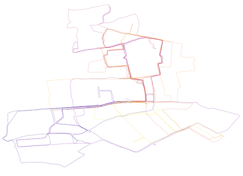

2024-10 | Tell me what the weather's like so I don't have to go outside
Things keep happening, time is like a river, etc.
• D and M and I went to a talk by Robert MacFarlane, which I feel mixed about. On the one hand, if you haven’t
read MacFarlane’s landscape writing, I really recommend it, because no one does it like he does. He takes unique
vantage points, putting stones and paths and motorway service stations into unexpected spatiotemporal
contexts, genealogies of the words people use to make place, patterns in the mire. I first read Landmarks, about
the history of words about landscape, because LBC (who has great taste in basically everything) recommended it.
His latest book is Underland, about underground spaces, and he visits crypts and subterreanean physics facilities
and caves around the world. Everyone loved it, I did too.
So what’s the other hand? Maybe I am at my core a hater, but the whole evening felt less like a talk about literature
and more like a celebration of Robert MacFarlane The Literary Hero (in hushed tones, the announcer explained that “Britain has no
tradition of the public intellectual, but Robert MacFarlane is the rare exception”. Really? Great Britain has no
tradition of the public intellectual? Who does, in that case?) and also a celebration of being the kind of person
who goes to talk by Robert MacFarlane. At one point he said something like the point of art is to allow space for
uncertainty, which is all very nice and a fair point, but sitting in a marquee on a literal country estate, surrounded by
the type of cashmere-clad Briton who has never been uncertain about anything in their life, it felt a bit hollow.
“Kitsch, of course, has no point”, proclaimed Robert solemnly, seemingly unaware that he had just gotten a room
full of middle-aged listeners to chant the Latin name for corncrake (Crex crex) together to marvel at how it sounds
like the stupid, endearing, endangered bird’s call.
Czech has the apt word sebedojímání, roughly translatable as a tendency to get self-sentimental, and I’m sure
I’m both at points prone to it and allergic to it in others. But anyway, MacFarlane’s books are unrepeatable.
We need the literary bois after all, even if we roll our eyes sometimes.
• C and I went to see the Outrun, based on the book about Amy Liptrot, which is about alcoholism and solitude
and the north of Scotland (and, incidentally, also a bit about corncrakes). It is intense, but I recommend it a lot.
• A corncrake is chřástal polní, or something like ”field rattler”,
in Czech, which is an artefact of the Czech National Revival, when we decided collectively as a nation that we did not
need foreign words for things, thank you very much. (This is also how, while every language from Inuit to Swahili
to Russian has a word for kangaroo that sounds roughly like kangaroo, Czechs have “klokan”, translatable roughly
as “thing that jumps and starts with a k”, a fact I really like and that I think is somehow quite telling).
• After years of haphazardly trying, I finally saw Spectral Wound,
which was excellent - an invigorating low rumble in the underbelly on a Thursday. I don’t live in the metal world
basically at all but always enjoy my visits. (One of J’s other projects is writing
essays about food, available in both
book
and blog
form, which I recommend without reservation.)
• Kit and I resurrected our old project Dear Data,
when we sent each other post cards of data visualizations about
our lives (based on
this
project by someone else). Maybe I’ll upload them sometime. Weird echoes: the same election,
8 years later. Leonard Cohen had just died. Some things are very different, but I’m still listening to
this and making plots of small things
in my daily life. I first met Kit maybe a little more than 8 years ago, when they were doing a PhD on
how oceanographers use computers (badly, it turns out -- no one ever told us how and yet here we are).
I continue to delight in our Halley's-comet mutual orbit -- Kit's a font of rarely-matched creative output
in both perspective and quality
& also a person of remarkable wit and morals & just all in all a Good Egg.
Cheers to the intermittent threads of friendship (and potentially sorry(-not-sorry) for the public love letter, K!)
I am not done this week's postcard yet, but here are all the small pre-work runs I’ve gone on this fall.
Basically, I just run in circles around the cemetery:

We published a rather obscure (but, you know, interesting) paper
paper
about opal ballasting in the ocean.
• I visited the UK Met Office for a collaboration, which was really neat. It’s very much the birthplace of the whole field of
numerical simulations of weather and climate, and maybe it’s my self-sentiment, but I’m always excited about this kind of thing.
An infinitely complex world brought into varying levels of focus by generations of people working together as more than the sum
of their parts - sense-making at all scales [něco něco mravenci vědy]. (I am not currently in the market for t-shirts with slogans on them,
but if I were, I’d be tempted by
this one,
inspired by the
shipping forecast.
(There’s also a podcast of random shipping
forecasts , which I think a lot of people use for both sleep and anxiety.)
• A good song for commutes to the Met Office is The Weather Song, even if it’s a
rather first-order association. It's a song that was a major landmark of the end of my time in Montréal, and it's somehow well over 10 years old now.
Tim Darcy’s flat-affect seething has aged really well, I think, and is a good bracing for different climatic conditions of all sorts:
Tell me what the weather’s like // so that I don’t have to go outside
The limit's on the inside // and there's no inside at all
There's nothing keeping you from shouting out loud that
You believe in more than keeping time with life
(It was one of the very few things I used to own on vinyl, before I gave it to A, who, unlike me, owns a gramophone. (I have never owned a gramophone.))